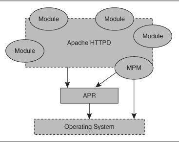

7-es tétel kidolgozása
Neptun kód: CTUMF2
Tétel leírása:
Ismertesse egy webes kiszolgáló két legfontosabb alrendszerét. Beszéljen a MySQL architektúrájáról, mutassa be az elérhető adatbázismotorokat. Mutassa be a MySQL jogosultságkezelési rendszerét! Ismertesse az Apache webszerver felépítését is. Térjen ki a modularitásra! Mire való a virtual host az apachban? Hogyan működik? Hogyan kell beállítani? Írjon a hitelesítés és jelszókezelés lehetőségeiről az Apache-ban! Hogyan épül fel az Apache konfigurációs fájl? (direktívák, konténerek, kontextus)
Kidolgozott tétel:
Webes kiszolgáló almoduljai:
Webes kiszolgáló alrendszerei: A Web Server (például Apache) és a perzisztens tároló, általában adatbázis (példásul MySQL). A web szerver egy kiszolgáló komponens, mely elérhetővé teszi a web kliensek számára a megjeleníthető tartamat (HTML/CSS) HTTP(S) protkoll segítségével. Az adatbázis tárolja a webcontenthez szükséges adatokat (például ügyféladatok, oldalhoz tartozó dinamikus tartalmaz stb)
MYSQL architektúra
Adatbázis motorok:
MYISAM: kis footprintel rendelkező verzió, általában csak read műveletekre használják
INNODB:Az alapértelmezett motor, ACID megfelelőséggű
MEMORAY: RAM-ban tárol, gyors adathozzáférést biztosítva. Kevésbé kritikus adatok tárolására alkalmazható, mivel adatvesztés kockázata jelentősebb.
CSV: text alapú tároló motor., CSV formátumban tárol, ezáltal könnyen integrálható különféle scriptekkel
NDB: Klaszterezett adatbázis, magas rendelekezésre állás igénye esetén
Federated: Több MySQL server egy logikai adatbázissá alakítását teszi lehetővé
MYSQL Jogosultságkezelés:
Felhasználó létrehozása a "Create User" parancssal lehetséges.
Jogok(privileges) adhatóak a "GRANT" parancscsal, illetve el is vehetőek a REVOKE parancs segítségével.
Alapvetően minden adatbázis objektumra (táblák, nézetek, triggerek stb) adhatóak különböző jogok.
Leggyakrabban használt jogosultságok: select, updtae, create, delete.
Ezen felül adatbázisüzemeltetéhez különböző jogok adhatóak afentieken kívül, például: tűzfal adminisztráció, audit log hozzáférés,
A külünböző privilégimokat szerepkörben (role) összefoghatjuk nagyobb egységbe, a könyebb adminisztráció jegyében.
Apache webszerever felépítése
Az apache webserver moduláris felépítésű, áll egy apache core modulból, ami a legszükségesebb fióunkcionalitást tartalmazza , amihez különböző egyéb modulok telepíthetőek, illetve saját modul fejlesztésére is nyílik lehetőség, így a számunkra szükséges funkciókat a modulok telepítésével érhetjk el.

Leggyakoribb modulok:
mpm_common: multi-processing modul
mod_proxy: proxy funkcionalitás
mod_ssl: TLS alapú kapcsolatok kezelésére
További modulok: https://httpd.apache.org/docs/2.4/mod/
Apache virtual host:
A virtual host egy apache konfigurációs direktíva, melynek segítségével a web kiszolgálónkban több különböző website-ot is kezelni tudunk.
HAsználata:
Listen 80
<VirtualHost *:80>
DocumentRoot "/www/example1"
ServerName www.example.com
# Other directives here
</VirtualHost>
<VirtualHost *:80>
DocumentRoot "/www/example2"
ServerName www.example.org
# Other directives here
</VirtualHost>
Apache hitelesítés és jelszókezelés
A hitelesítés használatához a mod_auth_basic (basic autentikáció kezelése) illetve a mod_auth_digest modul valamelyike szükségeltetik. Így jelszóval/ szofisztikáltabb autentikációs mechanizmussal védhetjük a tartalom elérését. Ilyenkor a felhasználó számára authentikációs adatok megadása szükséges velemiylen formában (popup ablak, bejelentkezés a weblapon keresztül, O365 authentikáció stb..)
Basic autentikáció esetén a htpaswd(jelszavak tárolása) és htaccess fileokon keresztül konfigurálható a hitelesítés.
Egyéb modulok használtaával lehetőség nyílik külső authentkiációs rendszerek használatához (pl: AD, O365, OpenLDAP) is, így a hitelesítési folyamat az apche hatókörén kívül helyezkedik el.
Apache konfiguráció:
A webkiszolgáló konfigurációját a httpd.conf file szerkesztésével tudjuk megteni, ahol különböző direktívákon keresztül érhetjük el a számunkra megfelelő beállításokat.
Leggyakoribb direktívák:
Listen :a listener port megadása
ServerName: a kiszolgáló dns címe (fqdn) vagy ip címe
DocumentRoot: a webes kiszolgáló gyökér könyvtára
<Directory "könyvtárnév">...</Directory> : beállítások alkalmazása könyvtárra
<Files "állománynév">...</Files> : beállítások alkalmazása file-ra
<VirtualHost > ....</VirtualHost> : virtuálsi hoszt beállítása, több domain kiszolgálása, név, ip, port alapján szeparálása
AuthType : Hitelesítés típusa
Források: